| 日付 | 2014年9月15日（月） |
|---|---|
| 山域 | 大菩薩 |
| メンバー | 家族（妻、長女・3歳、長男・1歳） |
| 山行形態 | 子連れ日帰り |
| アクセス | 車 |
| ルート (Map) | 大峠 (7:46) - (9:01) 雁ヶ腹摺山 (9:44) - (11:10) 大峠 |
大月市には雁ヶ腹摺山という名前の付いた山が3つある。
笹子雁ヶ腹摺山と牛奥ノ雁ヶ腹摺山の二山は過去に登ったことがあり、
今回は三山目の雁ヶ腹摺山に登る。
いずれの山頂からも富士山の展望が素晴らしいのだが、
この山からの富士山は、旧五百円紙幣の裏に
印刷されていたため、非常に有名である。
車で標高1570mの大峠までやってくる。
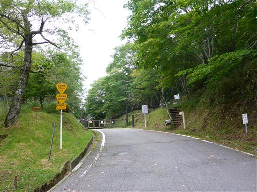
道幅は広く歩きやすい。それなりに人気の山のようだ。
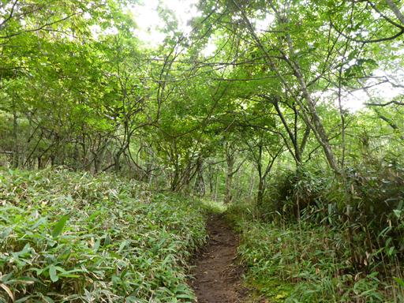
歩き始めるとすぐに、御硯水と書かれた立派な石碑が現れる。
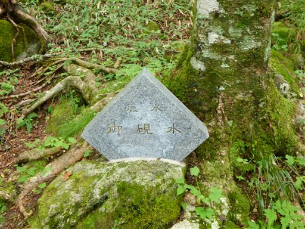
チョロチョロと水が出ている。水は非常に冷たい。
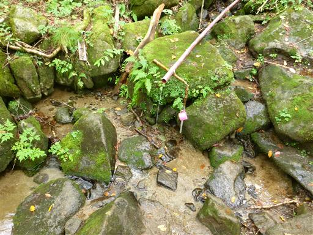
大きな段差を慎重に下る。
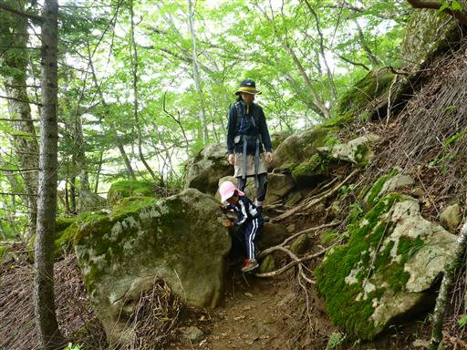
急な斜面も木の根につかまりながらグイグイ登っていく。

沢に架かる橋。こういった場所は苦手なようで、しっかり手をつないで歩いている。
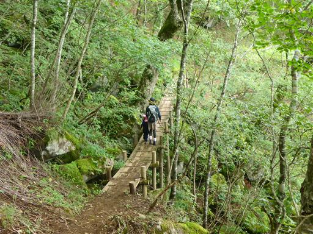
秋はキク科の花が多い。これはシロヨメナだろうか？
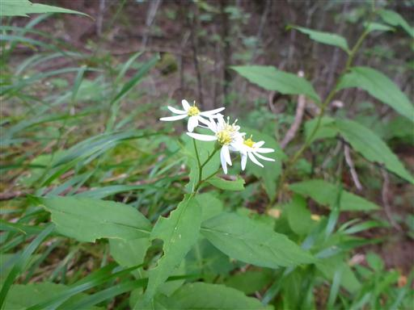
こちらはトリカブト。
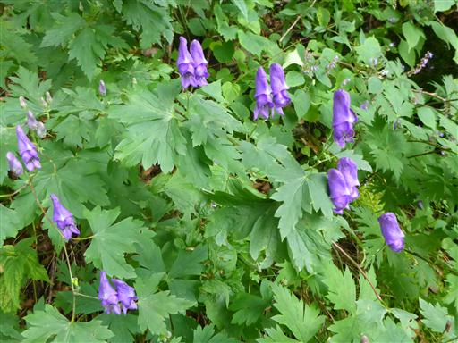
花は地味だが葉が特徴的。
カメバヒキオコシか、あるいはコウシンヤマハッカかも。
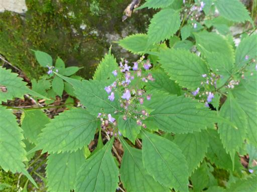
コウモリソウ。こちらも花は地味だが、葉の形が格好良い。

巨木の幹が縦横に伸びている。この辺りは落葉樹林帯が広がっている。
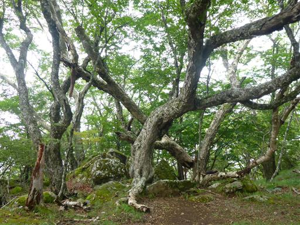
苔生した大岩が散在している。
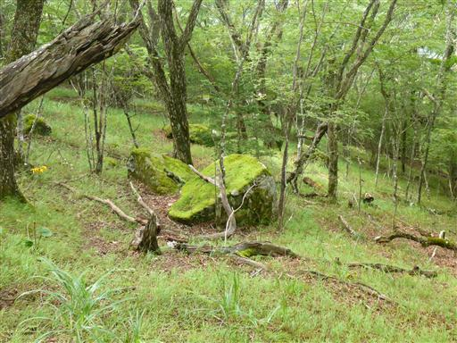
少し視界が開ける。雲が出ていて近くの山の展望しかない。
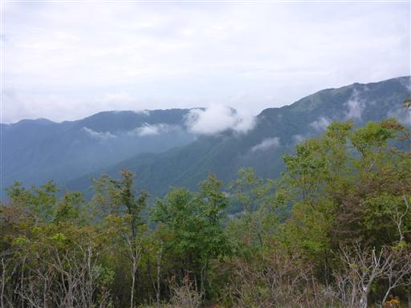
大きな石。まるで城の石垣のようだ。
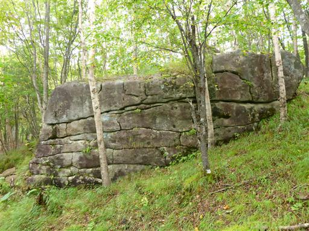
樹林帯を抜けると草原が広がっている。
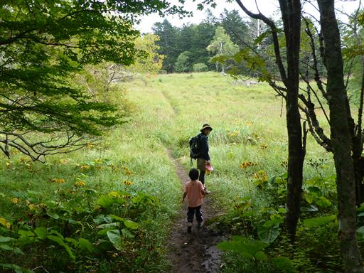
開放感あふれる草原を登っていく。
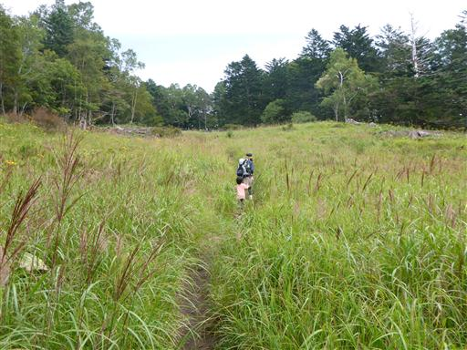
草原が広がる斜面を登りきったところが、雁ヶ腹摺山の山頂だ。標高1874m。
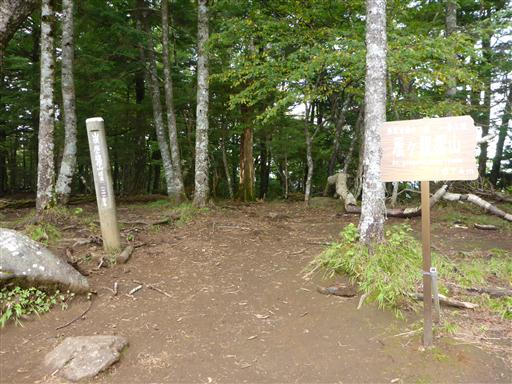
山頂には五百円札に描かれた富士山の写真が展示されている。
どのガイドブックを見ても「五百円札に…」と書かれているが、
五百円札の裏のデザインを覚えている人など皆無だろう。
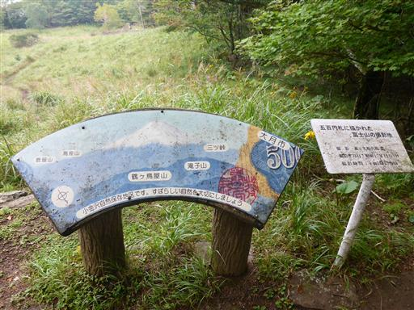
肝心の富士山は…
頭だけが辛うじて見えている。まあ何も見えないよりはましだ。
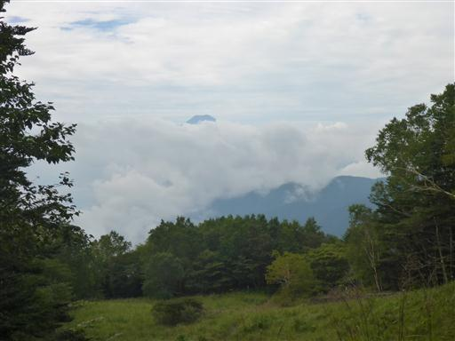
山頂で昼食をとったら、寒いので早めに退散する。
この時期は太陽が出ていないと、もう寒い。
マルバダケブキが咲く草原を抜けて樹林帯に入っていく。
この草原は富士山の展望のために、木を切って人為的に作られたものなのだろうか？
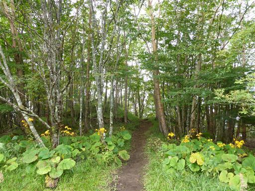
来た道を戻って駐車場に無事下山。
展望は今一だったが、久々に山登りをすることができた。
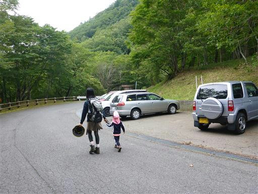